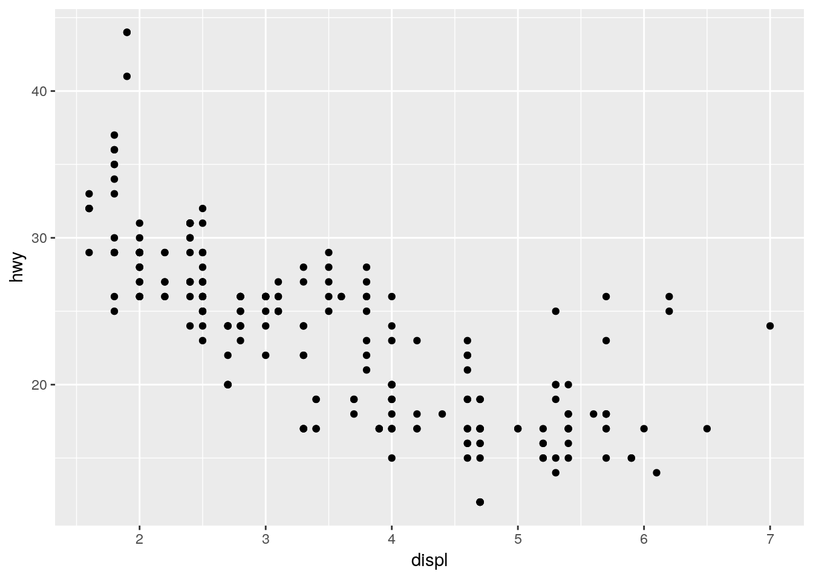
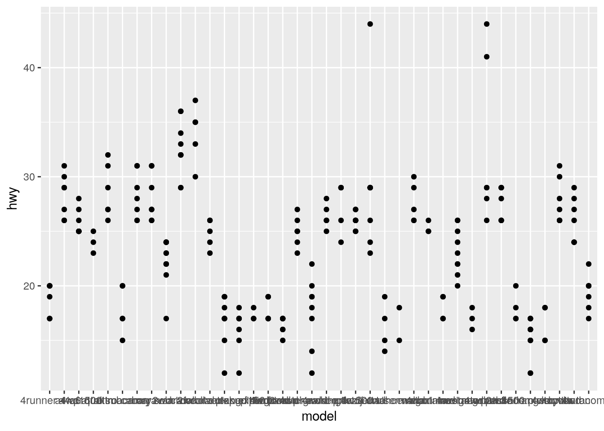
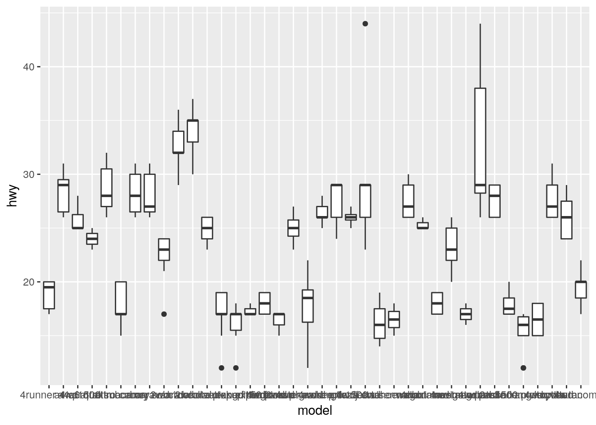

Add R Code under the questions. If you are done, ‘knit’ the document, commit and push to GitHub.
1 + 2## [1] 33 + 5 * 6## [1] 333 * 5 +
6## [1] 213 * 5## [1] 15+ 6## [1] 6( (3 + 5) * 6 )## [1] 48cos(pi) * 2## [1] -22 * 3 == 4## [1] FALSE# Placeholder: Add R code here# install.packages("tidyverse")
library(tidyverse)
# Placeholder: Add R code here
mpg## # A tibble: 234 x 11
## manufacturer model displ year cyl trans drv cty hwy fl class
## <chr> <chr> <dbl> <int> <int> <chr> <chr> <int> <int> <chr> <chr>
## 1 audi a4 1.8 1999 4 auto… f 18 29 p comp…
## 2 audi a4 1.8 1999 4 manu… f 21 29 p comp…
## 3 audi a4 2 2008 4 manu… f 20 31 p comp…
## 4 audi a4 2 2008 4 auto… f 21 30 p comp…
## 5 audi a4 2.8 1999 6 auto… f 16 26 p comp…
## 6 audi a4 2.8 1999 6 manu… f 18 26 p comp…
## 7 audi a4 3.1 2008 6 auto… f 18 27 p comp…
## 8 audi a4 q… 1.8 1999 4 manu… 4 18 26 p comp…
## 9 audi a4 q… 1.8 1999 4 auto… 4 16 25 p comp…
## 10 audi a4 q… 2 2008 4 manu… 4 20 28 p comp…
## # … with 224 more rowsview(mpg)
ggplot(mpg, aes(x = displ, y = hwy)) +
geom_point()
ggplot(mpg, aes(x = model, y = hwy)) +
geom_point()
ggplot(mpg, aes(x = model, y = hwy)) +
geom_boxplot()
docs/, save the ‘knitted’ result of your work in this directory as index.html and publish it so that others can see your work in a browser.